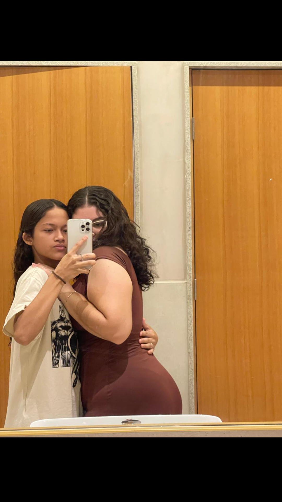
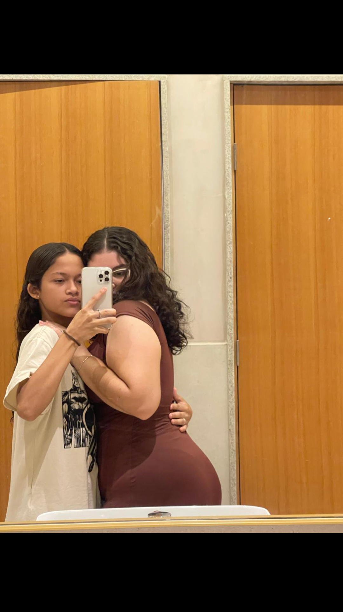


 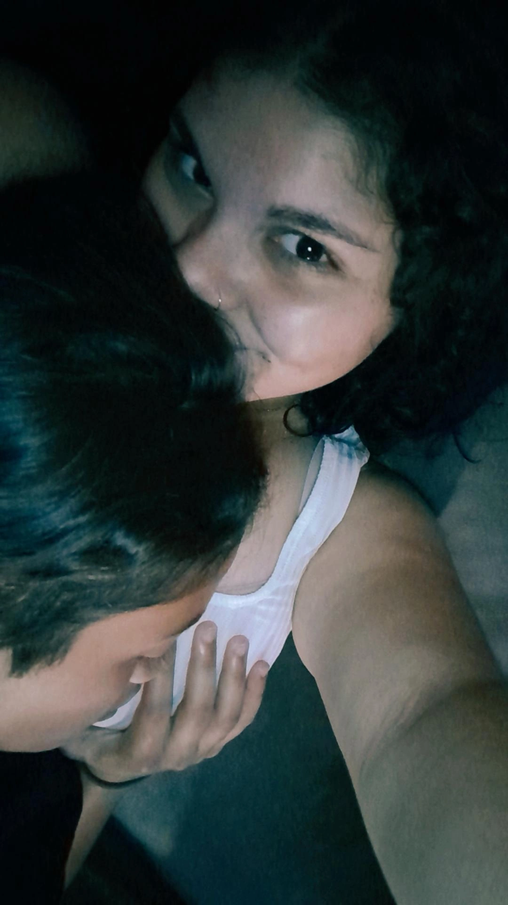
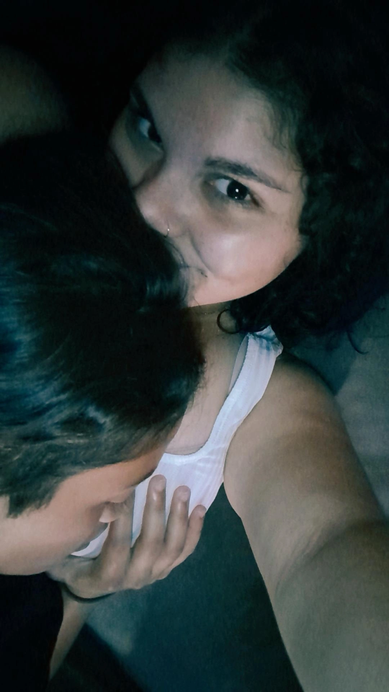
 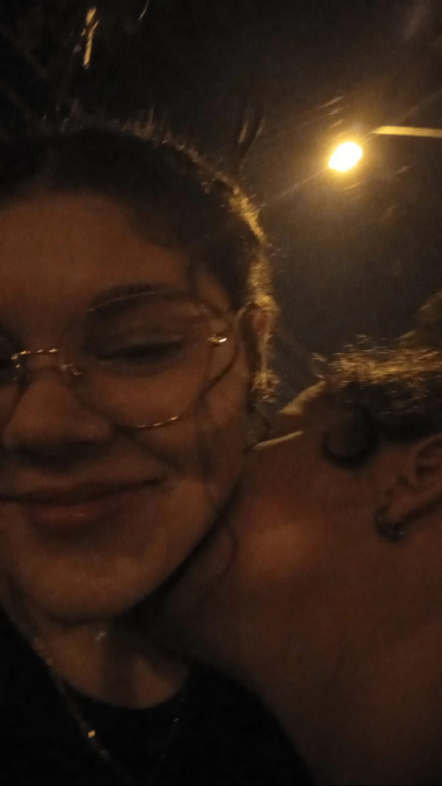
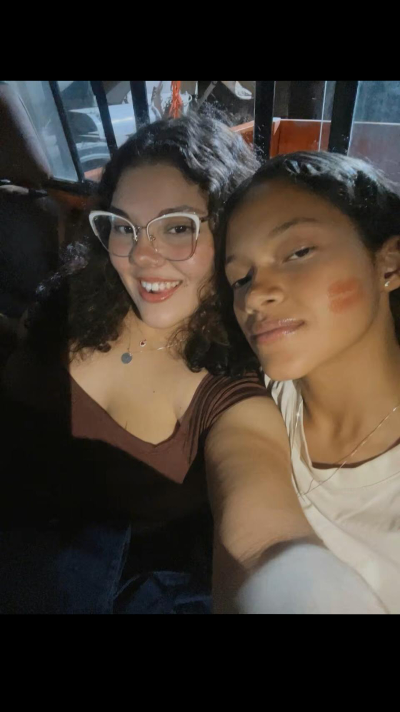
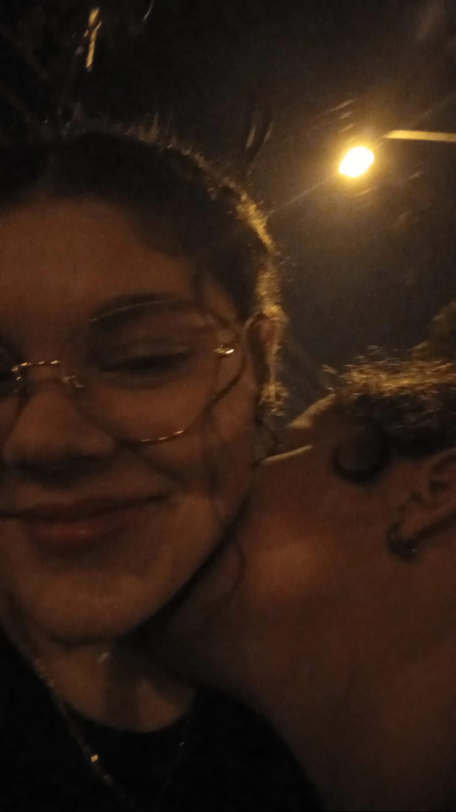
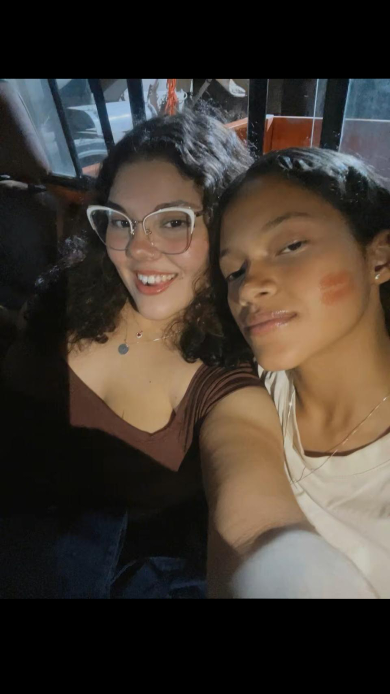


 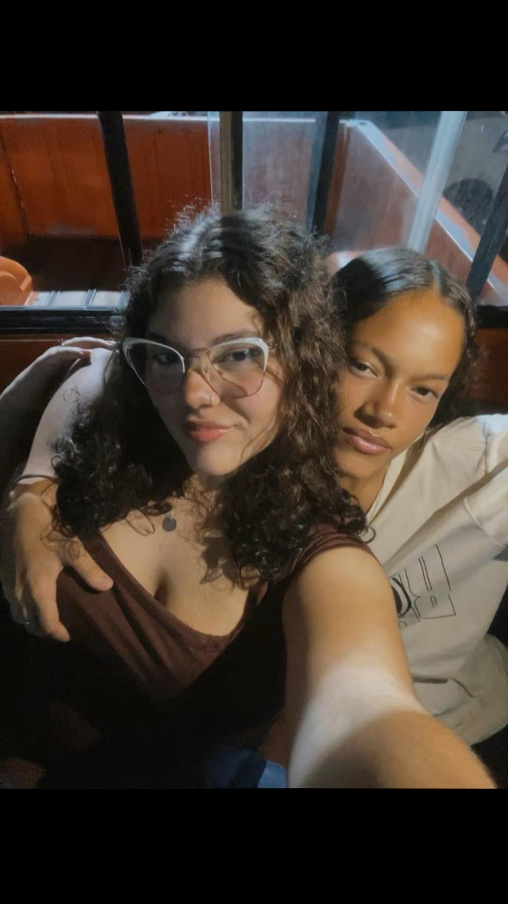
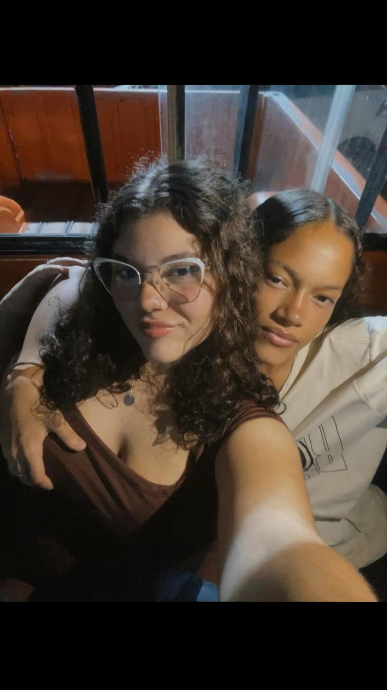


 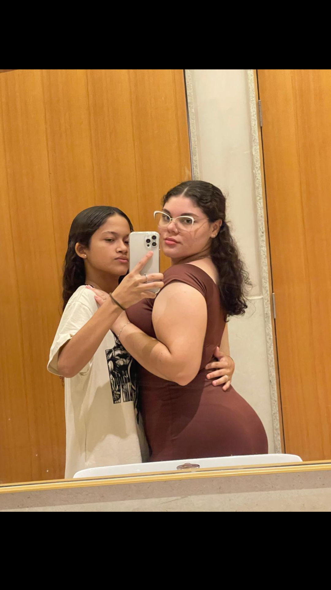
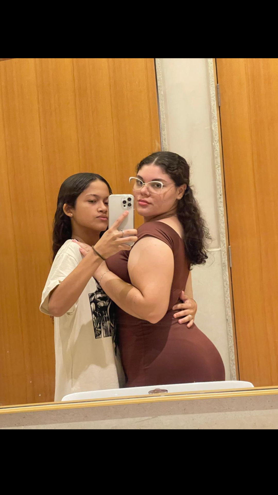

Juntas
Bom eu vou tentar ser breve, mas você sabe que eu nunca consigo falar pouco quando se trata da gente ou de você. Eu quero começar agradecendo TODOS os momentos incríveis e inesquecíveis que tivemos juntas esse ano, agradeço por você sempre está ao meu lado nos melhores e nos piores momentos, e em todos os dias da minha vida, apesar dos desentendimentos e discussões nunca nos faltou amor, persistência, companheirismo, união, respeito, intimidade, carinho, nunca nos faltou vontade de sempre fazer acontecer e de nunca desistir da gente e do nosso Amor. Muitos acham que 3 anos é muito tempo, e é sim muito tempo, pq hoje em dia as pessoas não ficam nem 1 ano em um relacionamento, pq elas começam a namorar sem ao menos planejar uma vida e um futuro com a pessoa, ou sem querer as vezes leva o relacionamento até o casamento, e é por isso e por muitos outros motivos que estamos juntas até hoje, completando 3 anos de namoro, pq quando você me pediu em namoro e eu aceitei o seu pedido nós já estávamos planejando o nosso futuro juntas, o nosso casamento, a nossa família, a nossa casa, a nossa vida juntas, pq desde até antes do momento que eu disse SIM pra você eu já planejava construir um relacionamento com você que fosse para a vida toda, eu já imaginava a gente nos casando, e tendo uma família linda, eu ja imaginava a gente na nossa casa brincando juntas com os nossos filhos na sala, eu já sonhava em te pedir em casamento. E muitos não aguentariam passar por Tudo o que já passamos para chegar até aqui, muitos desistiriam no meio do caminho, nas fases ruins, nos momentos difíceis, e até mesmo naqueles momentos que achávamos que era impossível seguir em frente, mas sempre fomos unidas para passar por TUDO isso juntas, uma segurando a mão da outra, uma levantando e apoiando a outra, e finalmente passamos por tudo, pq acima de tudo, existe amor, existe respeito, existe companheirismo, e união, e são esses os motivos de muitos que nos trouxeram até aqui. Mas ainda sim 3 anos é muito pouco tempo para todo o tempo que quero passar ao seu lado. Eu te amo eternamente, eu te amo além dessa vida, eu te amo Infinitamente, e te amarei para todo SEMPRE. Você sabe muito bem que eu faria de tudo por Nós, pelo nosso relacionamento, e por você, e principalmente eu faria o Possível e o Impossível para realizar o nosso sonho de construir uma família linda, eu daria a minha vida para isso e para ser com você, eu daria a minha vida pela sua, por que eu te amo mais do que você possa imaginar, nem se você contasse todas as gotas dos oceanos e multiplicasse por todas as estrelas do Universo você saberia o quanto eu te amo, por que vai muito além disso. Queria fala um pouco sobre você, e quando o assunto é você é inevitável eu não falar com um brilho nos olhos e com um sorriso no rosto por que fala de você é leve, é a coisa mais fácil do mundo, então quero fala do que você é para mim meu amor. Eu quero que saiba o quanto te admiro muito e tenho orgulho da Mulher que você é e que eu tenho ao meu lado, o quanto a sua essência e o seu coração é Lindo, então nunca perca essa essência e a sua personalidade, por que são as coisas que te fazem uma mulher forte como você é, quero que saiba também o quanto você é para mim a Mulher mais incrível, Perfeita, Linda, Maravilhosa, Gata e Gostosa do mundo. Amor quero que saiba mais do que tudo o quanto a sua beleza é Surreal, o quanto você é Linda e Perfeita, Gata e Gostosa, uma Deusa Grega, você é dona de uma beleza incomparável e encantadora, você é Linda por completa, seu corpo é Perfeito e cada detalhe dele é lindo e Fascinante, você é Deslumbrante, e Inefável, por que nenhuma palavra no mundo te descreveria e descreveria o quanto eu sou perdidamente, loucamente apaixonada por você. Você é a pessoa mais importante da minha vida e é mais Especial do que imagina. Saiba que eu sempre vou estar aqui para TUDO o que você precisar, saiba que eu sempre vou te apoiar em todos os seus sonhos e te ajudar a realizar eles, e saiba que vou estar com você nos seus melhores momentos e nos piores também. Eu te prometo que nunca vou desistir da gente, e que independente das brigas e discussões desistir nunca vai ser uma opção, assim como nunca foi, vou tentar sempre ser a melhor namorada do mundo pra você, e vou ser junto com você uma das melhores mamães do mundo, mais é claro que nesse quesito você ainda sim vai ganha de mim.
EU TE AMO MULHER DA MINHA VIDA, EU TE AMO ATÉ A MINHA ALMA, EU TE AMO ALÉM DESSA VIDA, EU TE AMO MAIS DO QUE TUDO, EU TE AMO COM TODO O MEU CORAÇÃO, EU TE AMO COM TODA A MINHA ALMA. E EU ESPERO QUE NOSSO AMOR DURE ATÉA ÚLTIMA ROSA MORRER.♡